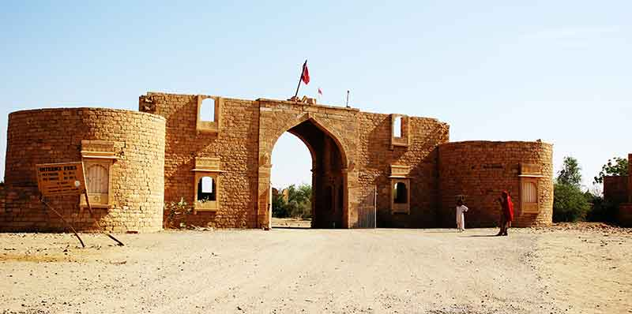
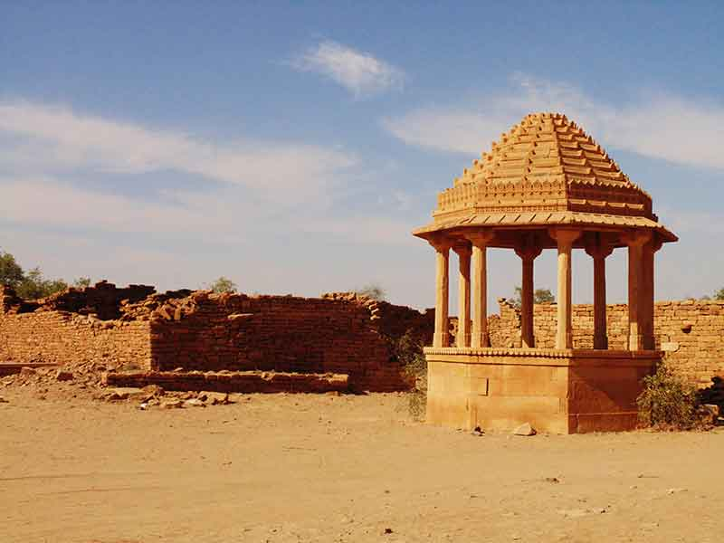
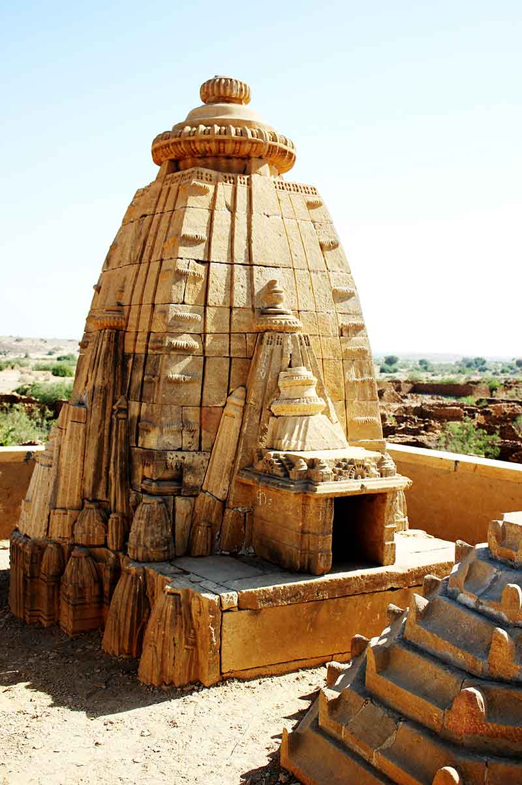
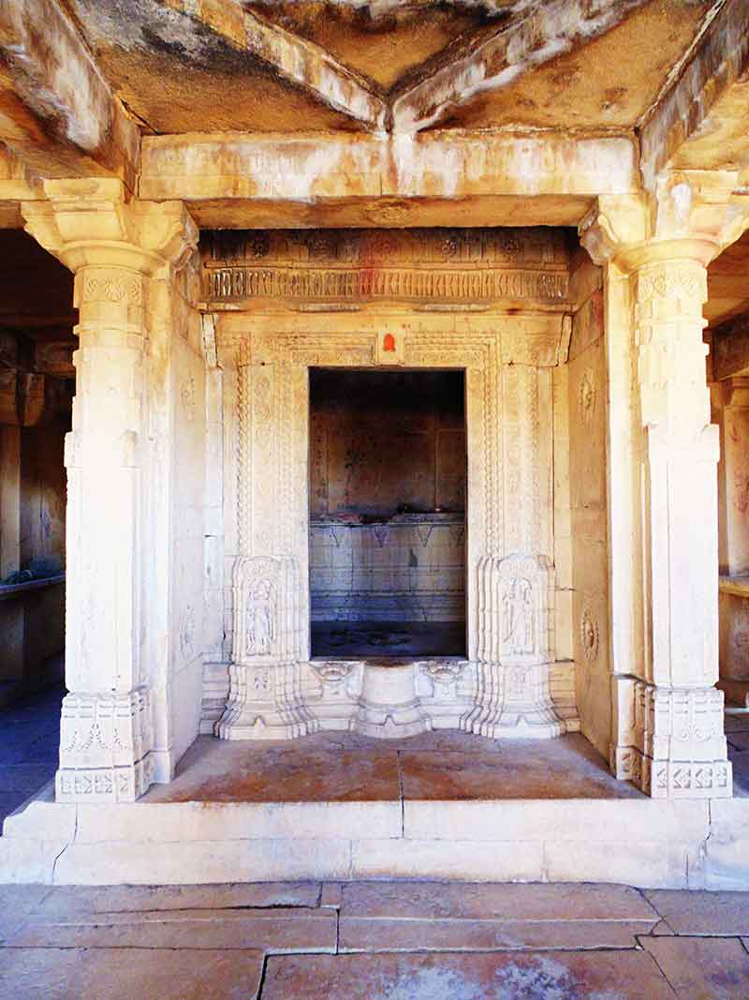
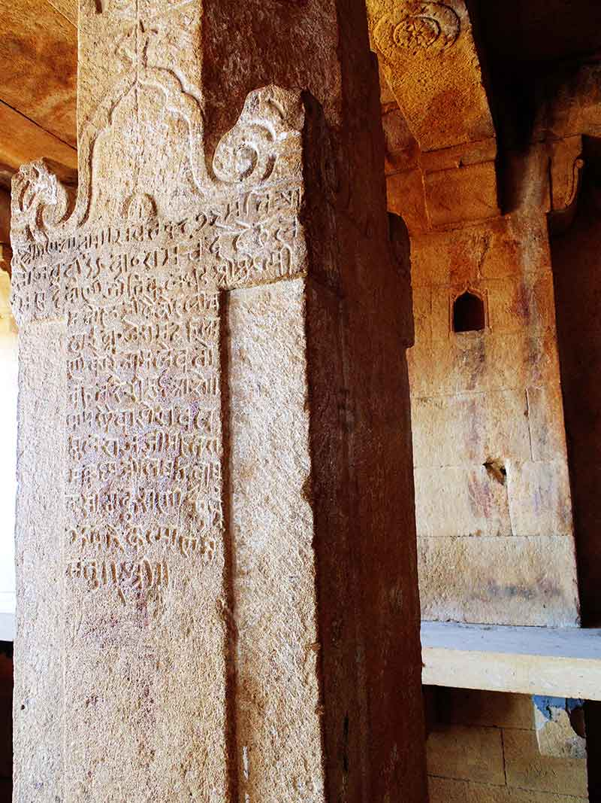
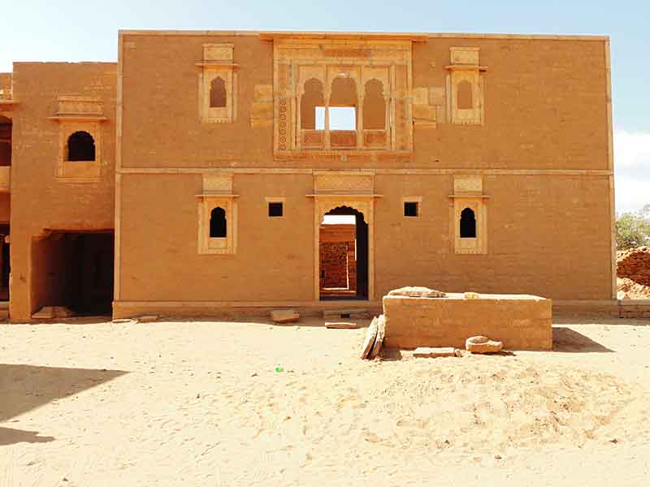
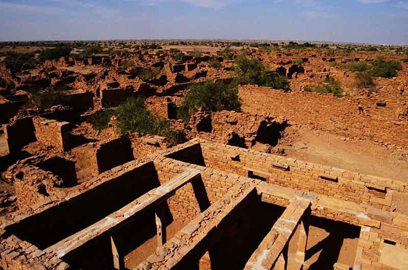


<html></html>
<head>
  <link rel="stylesheet" href="dist/assets/styles/wat_pho.css"/>
  <link rel="stylesheet" href="dist/assets/styles/main.css"/>
  <link href="https://fonts.googleapis.com/css?family=Roboto+Slab|Josefin+Sans" rel="stylesheet" type="text/css"/>
  <title>Kuldhara Village</title>
</head>
<body>
  <section class="wat_pho kuldhara clear">
    <div class="content">
      <h2>Kuldhara - Vanished without a trace
        <p><a href="souvenirs.html">Back</a></p>
      </h2>
    </div>
    <h3>Jaisalmer, Rajasthan, India</h3>
    <p>
      JAISALMER – the name conjures up a picture of a mysterious desert kingdom with winding lanes leading down to beautiful Havelis, history full of courageous men and beautiful women. There is history, heritage, royalty, architecture and culture. One could spend numerous mornings at the various Jain temples, cenotaphs and beautiful Havelis, endless evenings riding on the camels on the sand dunes into the sunset, and nights gazing at the stars from the desert camps. One could explore the bylanes of this fort city and never get bored.<br>
Just 18kms away from Jaisalmer, on the Sam sand dune road, is the village of Kuldhara. This deserted village in the midst of the Thar Desert is full of ruins, where each rubble is waiting patiently to whisper something into our ears. A sandstone gate welcomed us, and the first sight of the village gave us an extraordinary feeling of stumbling into another world.
      <br>
      </p>
    <p>
      Moving through the eerie silence, we could feel the hustle bustle of the people that once was. Finally, the bus stops for us to rush down to quench the long awaited thirst for haunted stories. With the immense history, the land has no dearth of ghost stories. We walked into the village, some ran to get the glimpse of the village, and others covered themselves up from the scorching noon sun, while the photographers with their cameras tried to capture the history that the desert stories convey.  The dry and dusty landscape and the scorching heat conveyed the struggled lives of the people even in the happier times.<br></p>
    </p>
    <p>
      We entered into the temple, which stood tall but the deities seemed to have disappeared, while there were inscriptions on the walls in Sanskrit and Marwadi dialects. 
      <br>
            
    </p>
    <p>
     As we headed towards the houses, it would be rightly said that it felt a little eerie. Rows upon rows of mud houses built in a grid pattern, their roofs snatched away by the desert winds and ruined walls made of mud and stones stood like the skeleton of some sad past. However, a few houses were restored and we could make our way to explore the inner courtyard, kitchen areas, other rooms and the garage used to park carts. The well planned rainwater harvesting system and other structure indicated the architectural intelligence and skills of the villagers.
      <br>
      
    </p>
    <p>
      Even after the village was so well settled and flourished, why did the clan of 84 villages abandon everything overnight and vanish into oblivion?<br>
Kuldhara was home of Paliwal Brahmins and in those days, Caste primarily defined a person’s identity. Marrying a girl to a caste lower than one’s own was unthinkable. Once when a warrior minister visited the village, he developed lecherous eyes for the village chief’s daughter and wanted to marry her. As the castes were different, the family did not agree and this caused the ruler to threaten them with unreasonable taxes. To this the village chief called upon a meeting of 83 other Paliwal Brahmin village chiefs, and decided to leave with pride and honour overruling all worldly interest, whatever they can carry with themselves leaving behind not just their homes but also a curse – that anyone who tries to live in the village will perish. But, the information about the resettlement of these 84 villagers is still unknown.<br>
However, the place doesn’t seem spooky for any reason other than the legends themselves and for our own perception based on these stories. As we departed, it felt like an old village had unveiled its secret to us.<br>

    </p>
<p style="text-align:right"><a href="https://www.facebook.com/sonee.jain">-Sonakshi Jain</a></p>
<a href="index.html">
      <button>back to home</button></a>
  </section>

<script async src="//pagead2.googlesyndication.com/pagead/js/adsbygoogle.js"></script>
<!-- kuldhara1 -->
<ins class="adsbygoogle"
     style="display:block"
     data-ad-client="ca-pub-1058317569330433"
     data-ad-slot="6329390702"
     data-ad-format="auto"></ins>
<script>
(adsbygoogle = window.adsbygoogle || []).push({});
</script>

<script>
  (function(i,s,o,g,r,a,m){i['GoogleAnalyticsObject']=r;i[r]=i[r]||function(){
  (i[r].q=i[r].q||[]).push(arguments)},i[r].l=1*new Date();a=s.createElement(o),
  m=s.getElementsByTagName(o)[0];a.async=1;a.src=g;m.parentNode.insertBefore(a,m)
  })(window,document,'script','//www.google-analytics.com/analytics.js','ga');

  ga('create', 'UA-73099561-1', 'auto');
  ga('send', 'pageview');

</script>

  <section id="footer" class="footer clear">
    <center>
      <div class="content clear">
        <div class="content-1">
          <p><span>WALK</span> <br> 4B/28, 2nd Floor, Tilak Nagar, New Delhi, Delhi 110018.
            <!--a(href='support.html') read more &#10140;-->
          </p>
        </div>
        <div class="content-2">
          <div class="content-2-1">
            <p><span>TALK</span><br> the.rovers@outlook.com</p>
          </div>
          <div class="content-2-2">
            <p><span>STALK</span>
              <ul id="social_icons">
                <li><a href="https://facebook.com/rover.org"></a></li>
		<li><a href="https://twitter.com/rovers_org"></a></li>
		<li><a href="https://instagram.com/the.rovers"></a></li>
                  <li><a href="https://www.youtube.com/channel/UCAH9TX_LhImPk9YEKKjf26A"></a></li>
                  <li><a href="https://plus.google.com/100252120756478981295"></a></li>
                  <li><a href="http://issuu.com/therovers"></a></li>
              </ul>
            </p>
          </div>
        </div>
      </div>
      <p class="rightpara">copyrights@2015 rovers.org.in</p>
    </center>
  </section>
</body>